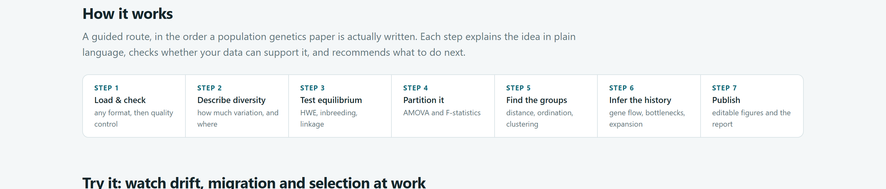
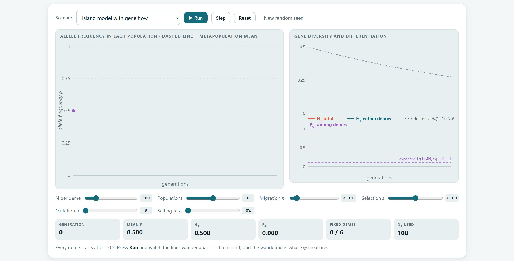
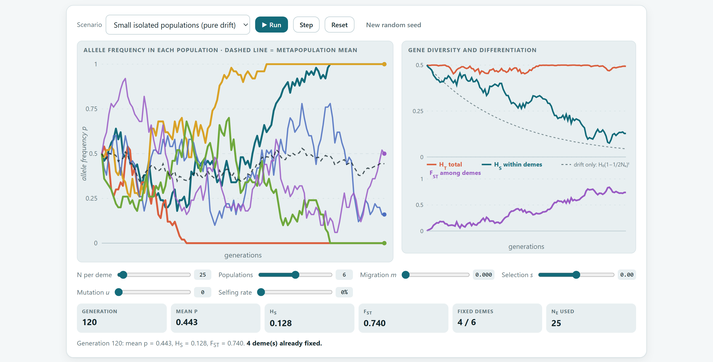
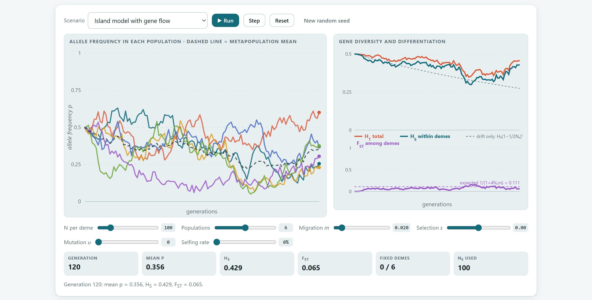
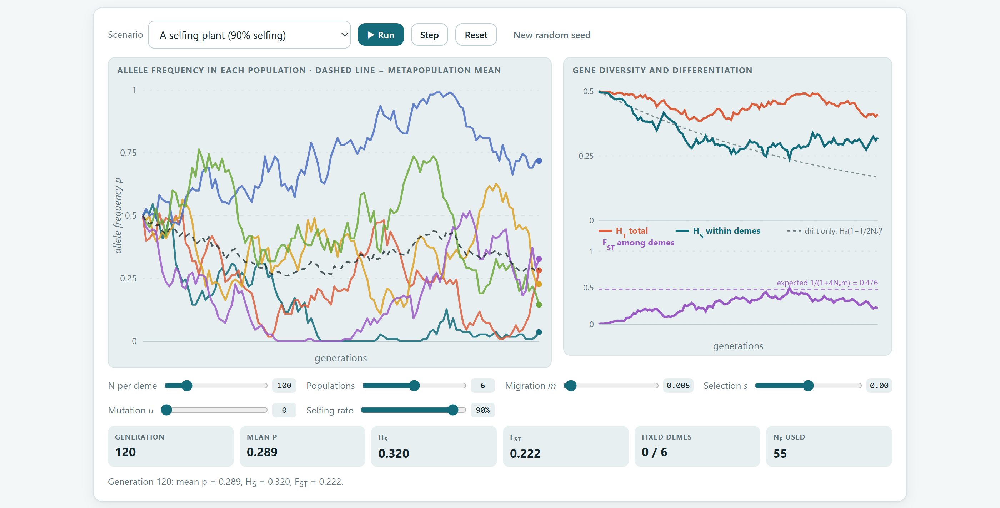
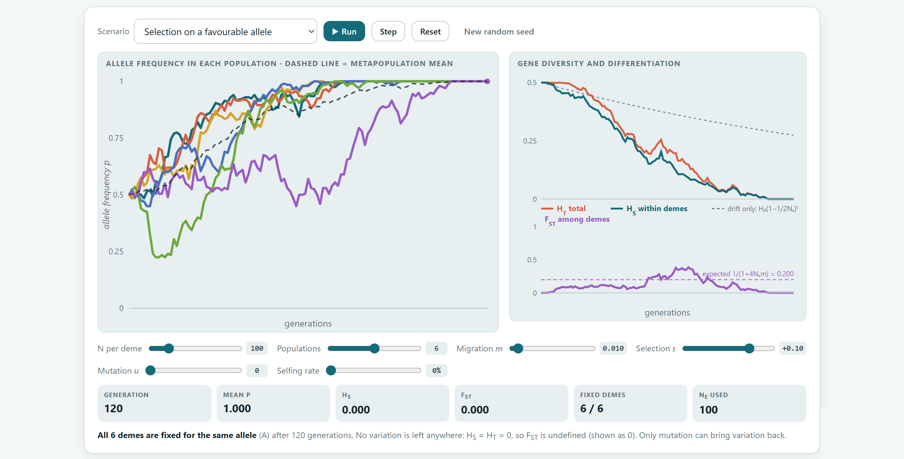
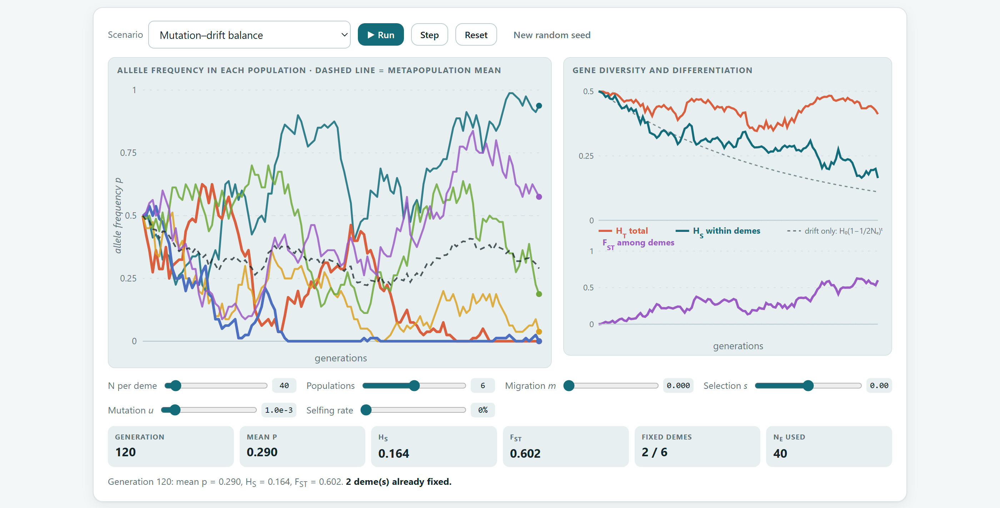
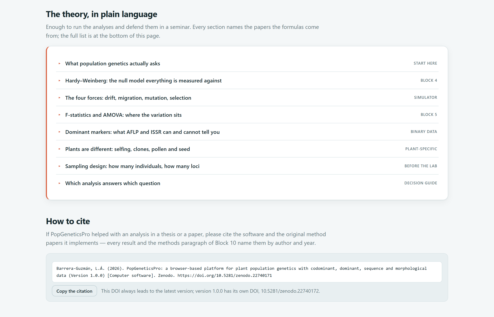
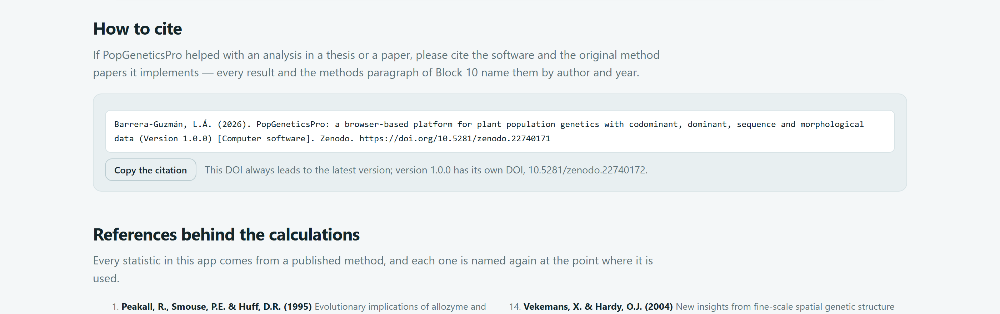

The app’s home page is more than a welcome screen. It is a map of the whole program, a laboratory where you can watch drift, gene flow, selection, mutation and selfing at work, and a summary of the theory with the references behind every calculation.
When you open index.html, Block 1 appears. It reads from top to bottom, like a brochure: first what the program does, then how to work through it, then a simulator to experiment with, the list of methods, the theory and, finally, how to cite it.
| Section in the app | What it contains | What it is for |
|---|---|---|
| Introduction four buttons and five guarantees | Start with my data, Play with the simulator, Read the theory and How to cite; an illustration with three populations and an ancestry plot. | Going straight to loading data or to any of the sections below. |
| How it works | The seven steps of a study, from the data file to the paper (figure 2.1). | Placing each block within the logic of a research project. |
| Try it: watch drift, migration and selection at work | The Wright–Fisher simulator (sections 2.2 and 2.3). | Understanding, through play, what HS, HT and FST mean. |
| What's inside | One card per analysis block, with an illustration and a description. | Jumping to a block with a single click. |
| Every kind of data a plant study produces | The four main types of marker and what each one allows. | Confirming that your data fit the program (chapter 1, section 1.4). |
| Methods covered | A gallery of 18 methods grouped by family (table 2.3). | Seeing at a glance everything that can be calculated. |
| What it brings together | The capabilities the program combines in a single workflow. | Justifying its use in a project or a thesis. |
| The theory, in plain language | Eight expandable topics with formulae, rules of thumb and references (section 2.4). | Reviewing the theory before interpreting or defending results. |
| How to cite and References behind the calculations | The citation of the program, ready to copy, and the 25 references for the methods (section 2.5). | Citing correctly in your paper. |

| Step | In the app | What is done | Blocks |
|---|---|---|---|
| 1 | Load & check | Load any format and check the quality of the data. | 2 |
| 2 | Describe diversity | How much variation there is and where it lies. | 3 |
| 3 | Test equilibrium | Hardy–Weinberg, inbreeding and linkage. | 4 |
| 4 | Partition it | Partition the variation with AMOVA and F-statistics. | 5 |
| 5 | Find the groups | Distances, ordination and clustering. | 6 7 |
| 6 | Infer the history | Gene flow, bottlenecks, expansion and divergence times. | 8 9 |
| 7 | Publish | Editable figures and report. | 10 |
| Family | Methods | Blocks |
|---|---|---|
| Diversity | Allele frequencies by locus and population · diversity indices (Na, Ne, Ho, He, uHe, I, PIC) · Hardy–Weinberg with χ² and exact tests · linkage disequilibrium (r², D′, r̄d) | 3 4 |
| Structure | Pairwise differentiation (FST, G′ST, Jost’s D, ΦPT) · hierarchical AMOVA · isolation by distance · spatial autocorrelation and Sp | 5 6 9 |
| Distance | NJ and UPGMA trees with bootstrap · principal coordinates of individuals or populations | 6 |
| Clustering | Bayesian clustering with ΔK · assignment tests and first-generation migrants | 7 |
| Sequences | Haplotype networks (median-joining) · divergence times with fossils and a relaxed clock · mismatch and neutrality tests (Tajima’s D, Fu’s Fs, R2) | 8 |
| Demography | Bottlenecks (heterozygosity excess, M ratio) · mating system (outcrossing rate and kinship) · effective population size | 9 |
The buttons in the introduction take you to the corresponding section of the home page itself, except Start with my data, which opens Block 2. The What's inside cards open their block. If you have not loaded any data yet, the app takes you to Block 2 with the message Load your data first, because every block reads from there. To return to the home page from anywhere, click the program’s name at the top left or the 1 Home button.
The simulator reproduces, generation after generation, the evolution of a locus with two alleles in several populations. It is not a decorative animation: it applies the same equations found in textbooks, and the diversity and differentiation curves are calculated from the simulated frequencies.
Imagine several populations of the same size that start with allele A at frequency p = 0.5. In each generation four things happen, always in the same order: selection favours one genotype, migration mixes each population with the average of all of them, mutation turns some alleles into others and, finally, drift randomly draws the 2Ne gene copies that will form the next generation. This last draw is what makes identical populations drift apart by pure chance.

1 2 3 4 5 6 7 8| Scenario | N | Pops. | m | s | u | Self. | What it shows |
|---|---|---|---|---|---|---|---|
| Small isolated populations (pure drift) | 25 | 6 | 0 | 0 | 0 | 0% | Drift alone |
| Island model with gene flow | 100 | 6 | 0.02 | 0 | 0 | 0% | Balance between drift and migration |
| A selfing plant (90% selfing) | 100 | 6 | 0.005 | 0 | 0 | 90% | Effect of selfing |
| Selection on a favourable allele | 100 | 6 | 0.01 | 0.10 | 0 | 0% | Directional selection |
| Mutation–drift balance | 40 | 6 | 0 | 0 | 0.001 | 0% | Mutation versus drift |
| Slider | Range | Meaning | If you increase it… |
|---|---|---|---|
| N per deme | 10 to 500 | Number of diploid individuals in each population. | Drift weakens: the lines fluctuate less and HS declines more slowly. |
| Populations | 2 to 10 | Number of populations followed at the same time. | More lines; FST is estimated with less noise. |
| Migration m | 0 to 0.2 | Fraction of each population that arrives, in each generation, from the pool of all the others. | The populations stay together: FST falls. |
| Selection s | −0.2 to 0.2 | Advantage of the AA homozygote; with negative values, a disadvantage. | Allele A rises in all populations at once. |
| Mutation u | 0 to 0.01 | Probability that a gene copy changes allele per generation. | New variation appears; fixed populations become variable again. |
| Selfing rate | 0 to 98% | Proportion of seeds produced by self-fertilisation. | Inbreeding increases and the effective size Ne decreases: drift speeds up. |
| Card | What it is | How to read it |
|---|---|---|
| Generation | Generations elapsed (from 0 to 120). | Time: compare it with Ne to judge whether “a lot” of time has passed. |
| Mean p | Mean frequency of allele A across all populations. | Barely changes under drift alone; rises or falls steadily under selection. |
| HS | Mean gene diversity within populations. | Starts at 0.5, the maximum with two alleles; declines through drift. |
| FST | Differentiation among populations. | 0 if all are identical; 1 if each has fixed a different allele (decision rule in section 2.2). |
| Fixed demes | Populations that have already lost one of the two alleles. | A fixed population cannot become variable again without migration or mutation. |
| Ne used | Effective size used for the drift draw. | Equal to N without selfing; smaller with it. |
Ht = H0 (1 − 1/2Ne)t
Each generation, a fraction 1/2Ne of the heterozygosity is lost. Half of it is lost in about 1.39 · Ne generations. This is the dotted line in the diversity panel.
FST ≈ 1 / (1 + 4 Ne m)
Wright showed that, in the island model, differentiation stabilises at this value. The product Nem is the number of migrants per generation. This is the dotted line in the FST panel.
| FST | Differentiation | Usual biological interpretation |
|---|---|---|
| 0 to 0.05 | Little | The populations exchange genes frequently; they behave almost as a single population. |
| 0.05 to 0.15 | Moderate | There is structure, but gene flow is still important. This is common in outcrossing plants. |
| 0.15 to 0.25 | Great | Fairly isolated populations, or populations with limited pollen and seed dispersal. |
| Over 0.25 | Very great | Strong isolation, selfing, or lineages that diverged long ago. |
Wright’s (1978) categories. With highly polymorphic markers, such as microsatellites, FST has a ceiling below 1; complement it with G′ST or Jost’s D (Block 5 chapter).
Converting an observed FST into Nem assumes an island model at equilibrium, with no selection or mutation, and with populations of equal size that exchange migrants equally with all the others. Real populations almost never meet these conditions. Report Nem as a rough guide, never as an actual count of migrants.
Each exercise uses one of the preset scenarios. The values quoted as expected come from theory. The simulated values are the average of 500 replicates of the same model the app uses, calculated for this manual. Because drift is random, your individual run will differ; compare it with the averages, not with an exact number.

| Measure | Expected | Simulated (500 replicates) |
|---|---|---|
| HS at generation 50 | 0.182 | 0.181 |
| HS at generation 120 | 0.044 | 0.042 |
| Generations to lose half of the heterozygosity | 34 | — |
| Mean time to fixation or loss of the allele, starting from p = 0.5 | 69 | — |
| Populations fixed at generation 120 (out of 6) | nearly all | 5.3 |
| Runs with all six populations fixed before generation 120 | — | 44% |
Drift does not change the average of the frequencies, but it scatters the populations: each one wanders away from 0.5 in a random direction until it fixes an allele. That is why diversity within populations is lost (HS follows the dotted curve), whereas the diversity of the whole set is preserved, shared out among different populations (HT stays close to 0.5). The difference between the two is precisely FST. This explains why small, isolated populations of rare or fragmented species tend to have little internal diversity and to be strongly differentiated from one another.
Try it yourself: raise N per deme to 250 and repeat. With ten times as many plants, heterozygosity is lost ten times more slowly: after 120 generations HS has only fallen to 0.39, and it is rare for any population to become fixed.

| Migration m | 0.001 | 0.005 | 0.01 | 0.02 | 0.05 | 0.10 |
|---|---|---|---|---|---|---|
| Migrants per generation (Nem) | 0.1 | 0.5 | 1 | 2 | 5 | 10 |
| Equilibrium FST | 0.714 | 0.333 | 0.200 | 0.111 | 0.048 | 0.024 |
| Differentiation (Wright) | very great | very great | great | moderate | little | little |
In 500 replicates with m = 0.02, the mean FST between generations 60 and 120 was 0.094, slightly lower than the expected 0.111. Wright’s formula assumes an infinite number of islands; with only six populations, each one receives part of its own genes back, and differentiation turns out lower. At low migration rates there is a further reason: equilibrium takes about 1/(2m) generations to be reached, so with m = 0.005 the simulator’s 120 generations are not enough (the simulated mean was 0.21, against an expected 0.333).

Selfing produces inbreeding: with a selfing rate S, the equilibrium inbreeding coefficient is F = S/(2 − S), which equals 0.82 when S = 0.9. This inbreeding reduces the effective size to Ne = N/(1 + F), because the gametes of a selfing plant are not independent samples of the population. With a smaller Ne, drift is stronger and differentiation greater. In 500 replicates, the mean FST over generations 60 to 120 was 0.35 with selfing versus 0.21 without it. Neither has yet reached its equilibrium, but the difference is clear. That is why selfing species usually show more variation among populations than within them.
The simulator tracks allele frequencies, so selfing acts only through Ne. The heterozygote deficit it causes, visible as a high FIS that is similar across all loci, is studied with real data in Block 4.

When selection pushes in the same direction in every population, it moves them together and does not differentiate them: in 500 replicates, the mean frequency of A reached 0.93 at generation 60 and 0.99 at generation 120, while FST averaged only 0.047. The selection that does differentiate populations is divergent selection, which favours different alleles in different environments. It leaves a typical signature in real data: a locus or a trait far more differentiated than the rest, which is sought by comparing PST with FST in Block 9.
| 4 Ne |s| | Which dominates | What to expect |
|---|---|---|
| Less than 1 | Drift | The allele behaves almost as if it were neutral; it can be lost even though it is advantageous. Example: Ne = 10 and s = 0.01 give 0.4. |
| 1 to 10 | Both | Selection steers the change, but chance produces variable outcomes among populations. |
| More than 10 | Selection | The change is almost deterministic. Example: Ne = 100 and s = 0.1 give 40. |
Practical consequence: in small populations, even adaptive variants can be lost by chance. Maintaining large effective sizes also maintains the capacity to adapt.

Drift removes variation and mutation creates it; over time the two reach a balance. For a two-allele locus with symmetric mutation, the equilibrium diversity is H = 4Neu / (1 + 8Neu). With Ne = 40 and u = 0.001 it equals 0.12, and with u = 0.005 it rises to 0.31. In the simulator, HS at generation 120 averaged 0.175, still on its way towards that equilibrium, whereas drift alone would have left it at 0.11. The lesson for real markers is that loci with high mutation rates, such as microsatellites (10⁻⁵ to 10⁻³ per generation), retain far more diversity than sequences, whose rates are thousands of times lower.
The five exercises work well as a single-session workshop. A useful approach is to ask each team to predict, before clicking Run, whether FST will end up above or below the expected line. The results of all the teams, which used different seeds, are then compared to discuss why drift is a random process and why several populations and several loci are needed to estimate it.
The The theory, in plain language section brings together eight expandable topics. Each one presents the central idea, its formulae, a box with the most important rule of thumb and the references it is drawn from. It opens with the Read the theory button in the introduction, which automatically expands the first topic.

| Topic in the app | Label | What you learn | Manual |
|---|---|---|---|
| What population genetics actually asks | start here | The four questions of the discipline, in order: how much variation there is, whether it is organised as random mating predicts, how it is partitioned and what history produced it. | 1 |
| Hardy–Weinberg: the null model everything is measured against | Block 4 | p², 2pq, q²; He, Ho and F; the three causes of a positive F and how to tell them apart. | B4 |
| The four forces: drift, migration, mutation, selection | simulator | Loss of heterozygosity through drift, island equilibrium, mutation rates and why neutral markers are informative about demography. | B1 |
| F-statistics and AMOVA: where the variation sits | Block 5 | FIS, FST and FIT; GST, θ, G′ST and Jost’s D; when to use AMOVA. | B5 |
| Dominant markers: what AFLP and ISSR can and cannot tell you | binary data | How frequencies are estimated from bands, which analyses remain valid and which do not. | B3 B5 |
| Plants are different: selfing, clones, pollen and seed | plant-specific | Mixed mating systems, clonality, pollen and seed dispersal, fine-scale spatial structure. | B2 B9 |
| Sampling design: how many individuals, how many loci | before the lab | Minimum sample sizes and number of loci according to the objective (table 2.10). | 1 |
| Which analysis answers which question | decision guide | A quick guide from the question to the analysis and the block. | 1 |
| Objective | Individuals per population | Loci |
|---|---|---|
| Diversity indices (He, Na) | 20 to 30 | 8 to 10 microsatellites |
| Allelic richness and rare alleles | 30 to 50 | 10 to 15 microsatellites |
| FST and AMOVA | 20 to 25, in at least 5 populations | 10 or more microsatellites, or more than 100 AFLP bands |
| Bayesian clustering | 25 to 30 | 15 or more microsatellites |
| Bottleneck tests | 30 or more | 15 to 20 microsatellites |
| Fine-scale spatial structure | 100 or more individuals with coordinates | 8 or more microsatellites |
| If your objective is… | … invest in |
|---|---|
| Estimating differentiation (FST, AMOVA, distances) | More loci. Each locus is an independent replicate of the history of the populations, and the variance of FST decreases faster when you add loci than when you add individuals. |
| Finding rare or private alleles | More individuals. An allele at a frequency of 2% has only a 64% probability of appearing in 25 diploid plants. |
| Detecting kinship or spatial structure | Both, with mapped individuals and highly polymorphic markers. |
If PopGeneticsPro helped you with a thesis or a paper, cite two things: the program, so that readers know which tool and version were used for the calculations, and the original papers describing the methods, whose authors deserve the scientific credit for each index or test.

The digital object identifier (DOI) in the citation, 10.5281/zenodo.22740171, is the concept DOI: it always resolves to the most recent version of the program. Each version also has its own DOI, shown in the record for that version in the archive; the one for version 1.0.0, for example, is 10.5281/zenodo.22740172. Cite the concept DOI together with the version number; if the journal requires that anyone be able to retrieve exactly the version you used, cite the DOI of that version.
| If you report… | Cite | Block |
|---|---|---|
| Gene diversity He and Nei’s distance | Nei (1973, 1978) | 3 6 |
| Sample size per population | Hale, Burg and Steeves (2012) | 2 |
| Frequencies with dominant markers | Lynch and Milligan (1994) | 3 5 |
| Weir and Cockerham’s θ | Weir and Cockerham (1984) | 5 |
| G′ST and Jost’s D | Hedrick (2005); Jost (2008) | 5 |
| AMOVA and ΦPT | Excoffier, Smouse and Quattro (1992); Peakall, Smouse and Huff (1995) | 5 |
| Bayesian clustering and ΔK | Pritchard, Stephens and Donnelly (2000); Evanno, Regnaut and Goudet (2005) | 7 |
| Tajima’s D and haplotype networks | Tajima (1989); Bandelt, Forster and Röhl (1999) | 8 |
| Sequence likelihood and among-site rate variation | Felsenstein (1981); Yang (1994) | 8 |
| Molecular dating | To et al. (2016); Drummond et al. (2006); Gernhard (2008); Parham et al. (2012) | 8 |
| Reference substitution rates | Wolfe, Li and Sharp (1987); Kay, Whittall and Hodges (2006) | 8 |
| Geological time scale | Cohen et al. (2013, updated) | 8 |
| Bottlenecks | Cornuet and Luikart (1996) | 9 |
| Spatial structure and the Sp statistic | Vekemans and Hardy (2004) | 9 |
| Mating system | Ritland (2002) | 9 |
Citing the program is not enough for another researcher to repeat your analysis. In the methods, state the version of PopGeneticsPro, the settings you changed (number of permutations, bootstrap replicates, multiple-testing correction, substitution model) and the random seed. The automatic report in Block 10 drafts that paragraph with the values you actually used.
With the home page, the simulator and the theory at hand, the next step is to load your own data. The Block 2 chapter explains the formats the app accepts, the built-in data sheet, the template designer and quality control, with the six examples worked through step by step.